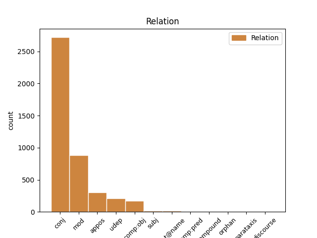
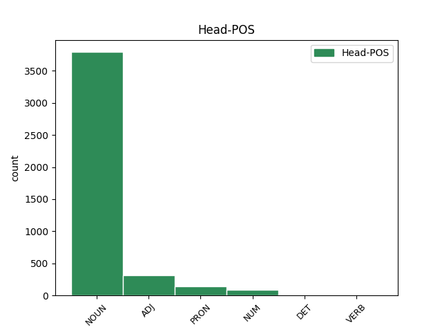
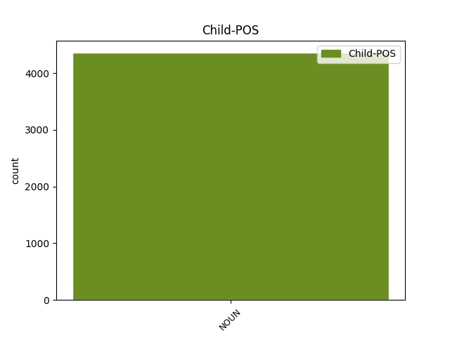

Distribution of features within this leaf



Agreement Rules sorted by frequency.
- When the dependent token is the conjunct(conj) of the head token, and the head token is NOUN and the dependent token is NOUN.
1 Her _ _ _ _ 0 _ _ _
2 står _ _ _ _ 0 _ _ _
3 laget _ _ _ _ 0 _ _ _
4 klar _ _ _ _ 0 _ _ _
5 med _ _ _ _ 0 _ _ _
6 saft saft NOUN _ Definite=Ind|Gender=Fem|Number=Sing 0 _ _ _
7 og _ _ _ _ 0 _ _ _
8 kaffi kaffi NOUN _ Definite=Ind|Gender=Masc|Number=Sing 6 conj _ _
9 til _ _ _ _ 0 _ _ _
10 alle _ _ _ _ 0 _ _ _
11 skigåarane _ _ _ _ 0 _ _ _
12 som _ _ _ _ 0 _ _ _
13 kjem _ _ _ _ 0 _ _ _
14 forbi _ _ _ _ 0 _ _ _
15 . _ _ _ _ 0 _ _ _
1 At _ _ _ _ 0 _ _ _
2 Anne _ _ _ _ 0 _ _ _
3 Enger _ _ _ _ 0 _ _ _
4 Lahnstein _ _ _ _ 0 _ _ _
5 framleis _ _ _ _ 0 _ _ _
6 har _ _ _ _ 0 _ _ _
7 publikumsappell _ _ _ _ 0 _ _ _
8 synte _ _ _ _ 0 _ _ _
9 det _ _ _ _ 0 _ _ _
10 store _ _ _ _ 0 _ _ _
11 frammøtet _ _ _ _ 0 _ _ _
12 til _ _ _ _ 0 _ _ _
13 Senterpartiets _ _ _ _ 0 _ _ _
14 bygdekveld _ _ _ _ 0 _ _ _
15 og _ _ _ _ 0 _ _ _
16 valmøte valmøte NOUN _ Definite=Ind|Gender=Neut|Number=Sing 0 _ _ _
17 på _ _ _ _ 0 _ _ _
18 Vinjehuset _ _ _ _ 0 _ _ _
19 onsdag onsdag NOUN _ Definite=Ind|Gender=Masc|Number=Sing 16 mod _ SpaceAfter=No
20 . _ _ _ _ 0 _ _ _
1 Like _ _ _ _ 0 _ _ _
2 viktig _ _ _ _ 0 _ _ _
3 som _ _ _ _ 0 _ _ _
4 eit _ _ _ _ 0 _ _ _
5 opprør _ _ _ _ 0 _ _ _
6 før _ _ _ _ 0 _ _ _
7 valet _ _ _ _ 0 _ _ _
8 meinte _ _ _ _ 0 _ _ _
9 ho _ _ _ _ 0 _ _ _
10 det _ _ _ _ 0 _ _ _
11 var _ _ _ _ 0 _ _ _
12 å _ _ _ _ 0 _ _ _
13 vera _ _ _ _ 0 _ _ _
14 eit _ _ _ _ 0 _ _ _
15 distriktspoliti _ _ _ _ 0 _ _ _
16 som _ _ _ _ 0 _ _ _
17 minner _ _ _ _ 0 _ _ _
18 politikarane _ _ _ _ 0 _ _ _
19 om _ _ _ _ 0 _ _ _
20 at _ _ _ _ 0 _ _ _
21 dei _ _ _ _ 0 _ _ _
22 er _ _ _ _ 0 _ _ _
23 til _ _ _ _ 0 _ _ _
24 for _ _ _ _ 0 _ _ _
25 folk folk NOUN _ Definite=Ind|Gender=Neut|Number=Plur 0 _ _ _
26 , _ _ _ _ 0 _ _ _
27 også _ _ _ _ 0 _ _ _
28 folk folk NOUN _ Definite=Ind|Gender=Neut|Number=Plur 25 appos _ _
29 i _ _ _ _ 0 _ _ _
30 utkantane _ _ _ _ 0 _ _ _
31 . _ _ _ _ 0 _ _ _
1 Bare _ _ _ _ 0 _ _ _
2 tri _ _ _ _ 0 _ _ _
3 parti _ _ _ _ 0 _ _ _
4 , _ _ _ _ 0 _ _ _
5 SV _ _ _ _ 0 _ _ _
6 , _ _ _ _ 0 _ _ _
7 Sp _ _ _ _ 0 _ _ _
8 og _ _ _ _ 0 _ _ _
9 Frp _ _ _ _ 0 _ _ _
10 , _ _ _ _ 0 _ _ _
11 fann _ _ _ _ 0 _ _ _
12 det _ _ _ _ 0 _ _ _
13 bryet bry NOUN _ Definite=Def|Gender=Neut|Number=Sing 14 comp:obj _ _
14 verdt verd ADJ _ Definite=Ind|Degree=Pos|Gender=Neut|Number=Sing 0 _ _ _
15 å _ _ _ _ 0 _ _ _
16 møte _ _ _ _ 0 _ _ _
17 til _ _ _ _ 0 _ _ _
18 ordskifte _ _ _ _ 0 _ _ _
19 om _ _ _ _ 0 _ _ _
20 distriktspolitikk _ _ _ _ 0 _ _ _
21 i _ _ _ _ 0 _ _ _
22 Bø _ _ _ _ 0 _ _ _
23 fredag _ _ _ _ 0 _ _ _
24 kveld _ _ _ _ 0 _ _ _
25 . _ _ _ _ 0 _ _ _
1 Sjølv _ _ _ _ 0 _ _ _
2 sit _ _ _ _ 0 _ _ _
3 eg _ _ _ _ 0 _ _ _
4 i _ _ _ _ 0 _ _ _
5 partiet parti NOUN _ Definite=Def|Gender=Neut|Number=Sing 6 udep _ _
6 sitt sin PRON _ Gender=Neut|Number=Sing|Poss=Yes|PronType=Prs 0 _ _ _
7 sentralstyre _ _ _ _ 0 _ _ _
8 og _ _ _ _ 0 _ _ _
9 vil _ _ _ _ 0 _ _ _
10 der _ _ _ _ 0 _ _ _
11 få _ _ _ _ 0 _ _ _
12 direkte _ _ _ _ 0 _ _ _
13 kontakt _ _ _ _ 0 _ _ _
14 med _ _ _ _ 0 _ _ _
15 både _ _ _ _ 0 _ _ _
16 stortingsgruppa _ _ _ _ 0 _ _ _
17 og _ _ _ _ 0 _ _ _
18 regjeringa _ _ _ _ 0 _ _ _
19 . _ _ _ _ 0 _ _ _
1 Blei _ _ _ _ 0 _ _ _
2 det _ _ _ _ 0 _ _ _
3 noko noko PRON _ Gender=Neut|Number=Sing|Person=3|PronType=Ind,Prs 0 _ _ _
4 att _ _ _ _ 0 _ _ _
5 ( _ _ _ _ 0 _ _ _
6 kaldgraut kaldgraut NOUN _ Definite=Ind|Gender=Masc|Number=Sing 3 appos _ SpaceAfter=No
7 ) _ _ _ _ 0 _ _ _
8 blei _ _ _ _ 0 _ _ _
9 grauten _ _ _ _ 0 _ _ _
10 skore _ _ _ _ 0 _ _ _
11 opp _ _ _ _ 0 _ _ _
12 i _ _ _ _ 0 _ _ _
13 skiver _ _ _ _ 0 _ _ _
14 og _ _ _ _ 0 _ _ _
15 steikt _ _ _ _ 0 _ _ _
16 i _ _ _ _ 0 _ _ _
17 fleskefeitt _ _ _ _ 0 _ _ _
18 . _ _ _ _ 0 _ _ _
1 På _ _ _ _ 0 _ _ _
2 ein _ _ _ _ 0 _ _ _
3 eller _ _ _ _ 0 _ _ _
4 annan _ _ _ _ 0 _ _ _
5 måte _ _ _ _ 0 _ _ _
6 har _ _ _ _ 0 _ _ _
7 alle _ _ _ _ 0 _ _ _
8 i _ _ _ _ 0 _ _ _
9 bygda _ _ _ _ 0 _ _ _
10 vore _ _ _ _ 0 _ _ _
11 med _ _ _ _ 0 _ _ _
12 å _ _ _ _ 0 _ _ _
13 ytt yte ADJ _ Definite=Ind|Gender=Neut|Number=Sing|VerbForm=Part 0 _ _ _
14 sitt _ _ _ _ 0 _ _ _
15 også _ _ _ _ 0 _ _ _
16 denne _ _ _ _ 0 _ _ _
17 venda vende NOUN _ Definite=Def|Gender=Fem|Number=Sing 13 udep _ SpaceAfter=No
18 . _ _ _ _ 0 _ _ _
1 SV _ _ _ _ 0 _ _ _
2 og _ _ _ _ 0 _ _ _
3 Sp _ _ _ _ 0 _ _ _
4 møtte _ _ _ _ 0 _ _ _
5 med _ _ _ _ 0 _ _ _
6 fyrste fyrste ADJ _ Definite=Def|Degree=Pos|Number=Sing 0 _ _ _
7 og _ _ _ _ 0 _ _ _
8 andrekandidatane andrekandidatane NOUN _ Definite=Ind|Gender=Masc|Number=Sing 6 conj _ _
9 sine _ _ _ _ 0 _ _ _
10 , _ _ _ _ 0 _ _ _
11 Sigbjørn _ _ _ _ 0 _ _ _
12 Molvik _ _ _ _ 0 _ _ _
13 og _ _ _ _ 0 _ _ _
14 Henriette _ _ _ _ 0 _ _ _
15 Westhrin _ _ _ _ 0 _ _ _
16 frå _ _ _ _ 0 _ _ _
17 SV _ _ _ _ 0 _ _ _
18 og _ _ _ _ 0 _ _ _
19 Lars _ _ _ _ 0 _ _ _
20 Bjaadal _ _ _ _ 0 _ _ _
21 og _ _ _ _ 0 _ _ _
22 Torunn _ _ _ _ 0 _ _ _
23 Hovde _ _ _ _ 0 _ _ _
24 Kaasa _ _ _ _ 0 _ _ _
25 frå _ _ _ _ 0 _ _ _
26 Sp _ _ _ _ 0 _ _ _
1 Dei _ _ _ _ 0 _ _ _
2 ser _ _ _ _ 0 _ _ _
3 at _ _ _ _ 0 _ _ _
4 velferdstilbodet _ _ _ _ 0 _ _ _
5 blir _ _ _ _ 0 _ _ _
6 svekka _ _ _ _ 0 _ _ _
7 og _ _ _ _ 0 _ _ _
8 grendeskular grendeskule NOUN _ Definite=Ind|Gender=Masc|Number=Plur 9 subj _ _
9 slakta slakte ADJ _ Number=Plur|VerbForm=Part 0 _ _ _
10 , _ _ _ _ 0 _ _ _
11 meiner _ _ _ _ 0 _ _ _
12 Oppebøen _ _ _ _ 0 _ _ _
13 Hansen _ _ _ _ 0 _ _ _
14 , _ _ _ _ 0 _ _ _
15 som _ _ _ _ 0 _ _ _
16 etter _ _ _ _ 0 _ _ _
17 ein _ _ _ _ 0 _ _ _
18 intens _ _ _ _ 0 _ _ _
19 valkamp _ _ _ _ 0 _ _ _
20 ikkje _ _ _ _ 0 _ _ _
21 har _ _ _ _ 0 _ _ _
22 inntrykk _ _ _ _ 0 _ _ _
23 av _ _ _ _ 0 _ _ _
24 at _ _ _ _ 0 _ _ _
25 vanlege _ _ _ _ 0 _ _ _
26 menneske _ _ _ _ 0 _ _ _
27 skrik _ _ _ _ 0 _ _ _
28 etter _ _ _ _ 0 _ _ _
29 skattelette _ _ _ _ 0 _ _ _
30 . _ _ _ _ 0 _ _ _
1 Utanom _ _ _ _ 0 _ _ _
2 ei _ _ _ _ 0 _ _ _
3 generell _ _ _ _ 0 _ _ _
4 innleiing _ _ _ _ 0 _ _ _
5 ( _ _ _ _ 0 _ _ _
6 kap. _ _ _ _ 0 _ _ _
7 8.1 _ _ _ _ 0 _ _ _
8 ) _ _ _ _ 0 _ _ _
9 består _ _ _ _ 0 _ _ _
10 kapitlet _ _ _ _ 0 _ _ _
11 av _ _ _ _ 0 _ _ _
12 fem _ _ _ _ 0 _ _ _
13 hovudbolkar _ _ _ _ 0 _ _ _
14 , _ _ _ _ 0 _ _ _
15 ein _ _ _ _ 0 _ _ _
16 om _ _ _ _ 0 _ _ _
17 språkutvikling _ _ _ _ 0 _ _ _
18 og _ _ _ _ 0 _ _ _
19 nye _ _ _ _ 0 _ _ _
20 språklege _ _ _ _ 0 _ _ _
21 kommunikasjonsformer _ _ _ _ 0 _ _ _
22 ( _ _ _ _ 0 _ _ _
23 kap. _ _ _ _ 0 _ _ _
24 8.2 _ _ _ _ 0 _ _ _
25 ) _ _ _ _ 0 _ _ _
26 , _ _ _ _ 0 _ _ _
27 ein _ _ _ _ 0 _ _ _
28 om _ _ _ _ 0 _ _ _
29 språkleg _ _ _ _ 0 _ _ _
30 dokumentasjon _ _ _ _ 0 _ _ _
31 ( _ _ _ _ 0 _ _ _
32 kap. _ _ _ _ 0 _ _ _
33 8.3 _ _ _ _ 0 _ _ _
34 ) _ _ _ _ 0 _ _ _
35 , _ _ _ _ 0 _ _ _
36 ein _ _ _ _ 0 _ _ _
37 om _ _ _ _ 0 _ _ _
38 språknormering _ _ _ _ 0 _ _ _
39 ( _ _ _ _ 0 _ _ _
40 kap. _ _ _ _ 0 _ _ _
41 8.4 _ _ _ _ 0 _ _ _
42 ) _ _ _ _ 0 _ _ _
43 , _ _ _ _ 0 _ _ _
44 ein ein PRON _ Animacy=Hum|Number=Sing|PronType=Art,Prs 0 _ _ _
45 om _ _ _ _ 0 _ _ _
46 språkrøkt _ _ _ _ 0 _ _ _
47 ( _ _ _ _ 0 _ _ _
48 kap. _ _ _ _ 0 _ _ _
49 8.5 _ _ _ _ 0 _ _ _
50 ) _ _ _ _ 0 _ _ _
51 og _ _ _ _ 0 _ _ _
52 til _ _ _ _ 0 _ _ _
53 slutt _ _ _ _ 0 _ _ _
54 ein _ _ _ _ 0 _ _ _
55 del del NOUN _ Definite=Ind|Gender=Masc|Number=Sing 44 conj _ _
56 som _ _ _ _ 0 _ _ _
57 spesielt _ _ _ _ 0 _ _ _
58 behandlar _ _ _ _ 0 _ _ _
59 det _ _ _ _ 0 _ _ _
60 offentlege _ _ _ _ 0 _ _ _
61 språket _ _ _ _ 0 _ _ _
62 ( _ _ _ _ 0 _ _ _
63 kap. _ _ _ _ 0 _ _ _
64 7.6 _ _ _ _ 0 _ _ _
65 ) _ _ _ _ 0 _ _ _
66 . _ _ _ _ 0 _ _ _
1 Det _ _ _ _ 0 _ _ _
2 inneber _ _ _ _ 0 _ _ _
3 at _ _ _ _ 0 _ _ _
4 norsk _ _ _ _ 0 _ _ _
5 og _ _ _ _ 0 _ _ _
6 engelsk _ _ _ _ 0 _ _ _
7 må _ _ _ _ 0 _ _ _
8 kunna _ _ _ _ 0 _ _ _
9 brukast _ _ _ _ 0 _ _ _
10 side _ _ _ _ 0 _ _ _
11 om _ _ _ _ 0 _ _ _
12 side _ _ _ _ 0 _ _ _
13 , _ _ _ _ 0 _ _ _
14 men _ _ _ _ 0 _ _ _
15 slik _ _ _ _ 0 _ _ _
16 at _ _ _ _ 0 _ _ _
17 norsk _ _ _ _ 0 _ _ _
18 blir _ _ _ _ 0 _ _ _
19 verande verande ADJ _ Definite=Ind|Degree=Pos|Number=Sing 0 _ _ _
20 det _ _ _ _ 0 _ _ _
21 føretrekte _ _ _ _ 0 _ _ _
22 språket språk NOUN _ Definite=Def|Gender=Neut|Number=Sing 19 comp:pred _ SpaceAfter=No
23 . _ _ _ _ 0 _ _ _
1 Mens _ _ _ _ 0 _ _ _
2 professor _ _ _ _ 0 _ _ _
3 Otto _ _ _ _ 0 _ _ _
4 Hageberg _ _ _ _ 0 _ _ _
5 i _ _ _ _ 0 _ _ _
6 « _ _ _ _ 0 _ _ _
7 Svidd svi ADJ _ Definite=Ind|Number=Sing|VerbForm=Part 0 _ _ _
8 sjel _ _ _ _ 0 _ _ _
9 » _ _ _ _ 0 _ _ _
10 , _ _ _ _ 0 _ _ _
11 Skrede-biografien Skrede-biografi NOUN _ Definite=Def|Gender=Masc|Number=Sing 7 appos _ _
12 sin _ _ _ _ 0 _ _ _
13 av _ _ _ _ 0 _ _ _
14 året _ _ _ _ 0 _ _ _
15 , _ _ _ _ 0 _ _ _
16 ikkje _ _ _ _ 0 _ _ _
17 tek _ _ _ _ 0 _ _ _
18 stilling _ _ _ _ 0 _ _ _
19 til _ _ _ _ 0 _ _ _
20 skuldspørsmålet _ _ _ _ 0 _ _ _
21 , _ _ _ _ 0 _ _ _
22 er _ _ _ _ 0 _ _ _
23 Ulateigs _ _ _ _ 0 _ _ _
24 bok _ _ _ _ 0 _ _ _
25 « _ _ _ _ 0 _ _ _
26 Korsfestelsen _ _ _ _ 0 _ _ _
27 » _ _ _ _ 0 _ _ _
28 ei _ _ _ _ 0 _ _ _
29 blank _ _ _ _ 0 _ _ _
30 frifinning _ _ _ _ 0 _ _ _
31 av _ _ _ _ 0 _ _ _
32 læraren _ _ _ _ 0 _ _ _
33 som _ _ _ _ 0 _ _ _
34 seinare _ _ _ _ 0 _ _ _
35 blei _ _ _ _ 0 _ _ _
36 ein _ _ _ _ 0 _ _ _
37 av _ _ _ _ 0 _ _ _
38 landets _ _ _ _ 0 _ _ _
39 fremste _ _ _ _ 0 _ _ _
40 lyrikarar _ _ _ _ 0 _ _ _
41 og _ _ _ _ 0 _ _ _
42 litteraturkritikarar _ _ _ _ 0 _ _ _
43 . _ _ _ _ 0 _ _ _
1 - _ _ _ _ 0 _ _ _
2 Dei _ _ _ _ 0 _ _ _
3 manglane mangel NOUN _ Definite=Def|Gender=Masc|Number=Plur 9 mod _ _
4 som _ _ _ _ 0 _ _ _
5 institusjonen _ _ _ _ 0 _ _ _
6 har _ _ _ _ 0 _ _ _
7 , _ _ _ _ 0 _ _ _
8 vil _ _ _ _ 0 _ _ _
9 dei dei PRON _ Animacy=Hum|Case=Nom|Number=Plur|Person=3|PronType=Prs 0 _ _ _
10 i _ _ _ _ 0 _ _ _
11 framtida _ _ _ _ 0 _ _ _
12 bli _ _ _ _ 0 _ _ _
13 bruka _ _ _ _ 0 _ _ _
14 negativt _ _ _ _ 0 _ _ _
15 når _ _ _ _ 0 _ _ _
16 det _ _ _ _ 0 _ _ _
17 er _ _ _ _ 0 _ _ _
18 snakk _ _ _ _ 0 _ _ _
19 om _ _ _ _ 0 _ _ _
20 å _ _ _ _ 0 _ _ _
21 nytte _ _ _ _ 0 _ _ _
22 Norheimstunet _ _ _ _ 0 _ _ _
23 til _ _ _ _ 0 _ _ _
24 pleiepasientar _ _ _ _ 0 _ _ _
25 , _ _ _ _ 0 _ _ _
26 spurde _ _ _ _ 0 _ _ _
27 han _ _ _ _ 0 _ _ _
28 , _ _ _ _ 0 _ _ _
29 og _ _ _ _ 0 _ _ _
30 la _ _ _ _ 0 _ _ _
31 til _ _ _ _ 0 _ _ _
32 at _ _ _ _ 0 _ _ _
33 det _ _ _ _ 0 _ _ _
34 trass _ _ _ _ 0 _ _ _
35 alt _ _ _ _ 0 _ _ _
36 er _ _ _ _ 0 _ _ _
37 bygt _ _ _ _ 0 _ _ _
38 for _ _ _ _ 0 _ _ _
39 å _ _ _ _ 0 _ _ _
40 erstatte _ _ _ _ 0 _ _ _
41 Vinje _ _ _ _ 0 _ _ _
42 bygdeheim _ _ _ _ 0 _ _ _
43 . _ _ _ _ 0 _ _ _
1 Det _ _ _ _ 0 _ _ _
2 som _ _ _ _ 0 _ _ _
3 har _ _ _ _ 0 _ _ _
4 utløyst _ _ _ _ 0 _ _ _
5 trusselmeldinga _ _ _ _ 0 _ _ _
6 er _ _ _ _ 0 _ _ _
7 ei _ _ _ _ 0 _ _ _
8 teneste _ _ _ _ 0 _ _ _
9 Holte _ _ _ _ 0 _ _ _
10 har _ _ _ _ 0 _ _ _
11 gjort _ _ _ _ 0 _ _ _
12 mange _ _ _ _ 0 _ _ _
13 andre annan DET _ Number=Plur|PronType=Dem 0 _ _ _
14 glade _ _ _ _ 0 _ _ _
15 for _ _ _ _ 0 _ _ _
16 sidan _ _ _ _ 0 _ _ _
17 1993 _ _ _ _ 0 _ _ _
18 , _ _ _ _ 0 _ _ _
19 nemleg _ _ _ _ 0 _ _ _
20 reinsdyrjegerane reinsdyrjeger NOUN _ Definite=Def|Gender=Masc|Number=Plur 13 appos _ SpaceAfter=No
21 . _ _ _ _ 0 _ _ _
1 Så _ _ _ _ 0 _ _ _
2 kjem _ _ _ _ 0 _ _ _
3 25 _ _ _ _ 0 _ _ _
4 ungdommar _ _ _ _ 0 _ _ _
5 som _ _ _ _ 0 _ _ _
6 aldri _ _ _ _ 0 _ _ _
7 har _ _ _ _ 0 _ _ _
8 gått _ _ _ _ 0 _ _ _
9 i _ _ _ _ 0 _ _ _
10 1.mai-tog _ _ _ _ 0 _ _ _
11 , _ _ _ _ 0 _ _ _
12 seier _ _ _ _ 0 _ _ _
13 at _ _ _ _ 0 _ _ _
14 « _ _ _ _ 0 _ _ _
15 Trygghet _ _ _ _ 0 _ _ _
16 i _ _ _ _ 0 _ _ _
17 fellesskapet _ _ _ _ 0 _ _ _
18 » _ _ _ _ 0 _ _ _
19 bør _ _ _ _ 0 _ _ _
20 byttast _ _ _ _ 0 _ _ _
21 ut _ _ _ _ 0 _ _ _
22 med _ _ _ _ 0 _ _ _
23 « _ _ _ _ 0 _ _ _
24 Kamp kamp NOUN _ Definite=Ind|Gender=Masc|Number=Sing 0 _ _ _
25 mot _ _ _ _ 0 _ _ _
26 imperialismen imperialisme NOUN _ Definite=Def|Gender=Masc|Number=Sing 24 flat@name _ SpaceAfter=No
27 » _ _ _ _ 0 _ _ _
28 og _ _ _ _ 0 _ _ _
29 at _ _ _ _ 0 _ _ _
30 møtefleirtalet _ _ _ _ 0 _ _ _
31 skal _ _ _ _ 0 _ _ _
32 avgjere _ _ _ _ 0 _ _ _
33 i _ _ _ _ 0 _ _ _
34 demokratiets _ _ _ _ 0 _ _ _
35 namn _ _ _ _ 0 _ _ _
36 . _ _ _ _ 0 _ _ _
1 - _ _ _ _ 0 _ _ _
2 Topp topp NOUN _ Definite=Ind|Gender=Masc|Number=Sing 3 compound _ _
3 ti-plassering ti-plassering NOUN _ Definite=Ind|Gender=Fem|Number=Sing 0 _ _ _
4 er _ _ _ _ 0 _ _ _
5 alltid _ _ _ _ 0 _ _ _
6 supert _ _ _ _ 0 _ _ _
7 , _ _ _ _ 0 _ _ _
8 smiler _ _ _ _ 0 _ _ _
9 han _ _ _ _ 0 _ _ _
10 om _ _ _ _ 0 _ _ _
11 målsetjinga _ _ _ _ 0 _ _ _
12 før _ _ _ _ 0 _ _ _
13 helgas _ _ _ _ 0 _ _ _
14 renn _ _ _ _ 0 _ _ _
15 . _ _ _ _ 0 _ _ _
1 Bestillingsverket _ _ _ _ 0 _ _ _
2 på _ _ _ _ 0 _ _ _
3 tri _ _ _ _ 0 _ _ _
4 minutt _ _ _ _ 0 _ _ _
5 blei _ _ _ _ 0 _ _ _
6 i _ _ _ _ 0 _ _ _
7 kortaste _ _ _ _ 0 _ _ _
8 laget _ _ _ _ 0 _ _ _
9 , _ _ _ _ 0 _ _ _
10 og _ _ _ _ 0 _ _ _
11 duoen _ _ _ _ 0 _ _ _
12 gav _ _ _ _ 0 _ _ _
13 publikum _ _ _ _ 0 _ _ _
14 ein _ _ _ _ 0 _ _ _
15 ekstra _ _ _ _ 0 _ _ _
16 bonus _ _ _ _ 0 _ _ _
17 med _ _ _ _ 0 _ _ _
18 « _ _ _ _ 0 _ _ _
19 Den den DET _ Gender=Fem|Number=Sing|PronType=Dem 0 _ _ _
20 seine _ _ _ _ 0 _ _ _
21 sommarnatt sommarnatt NOUN _ Definite=Ind|Gender=Fem|Number=Sing 19 flat@name _ SpaceAfter=No
22 » _ _ _ _ 0 _ _ _
23 og _ _ _ _ 0 _ _ _
24 « _ _ _ _ 0 _ _ _
25 Vaka _ _ _ _ 0 _ _ _
26 og _ _ _ _ 0 _ _ _
27 venta _ _ _ _ 0 _ _ _
28 » _ _ _ _ 0 _ _ _
29 . _ _ _ _ 0 _ _ _
1 Alt _ _ _ _ 0 _ _ _
2 då _ _ _ _ 0 _ _ _
3 gikk _ _ _ _ 0 _ _ _
4 steinbrotet _ _ _ _ 0 _ _ _
5 utover _ _ _ _ 0 _ _ _
6 grensa _ _ _ _ 0 _ _ _
7 på _ _ _ _ 0 _ _ _
8 90 _ _ _ _ 0 _ _ _
9 gonger gong NOUN _ Definite=Ind|Gender=Masc|Number=Plur 10 udep _ _
10 45 45 NUM _ Number=Plur|NumType=Card 0 _ _ _
11 meter _ _ _ _ 0 _ _ _
12 og _ _ _ _ 0 _ _ _
13 han _ _ _ _ 0 _ _ _
14 meiner _ _ _ _ 0 _ _ _
15 hytteeigarane _ _ _ _ 0 _ _ _
16 har _ _ _ _ 0 _ _ _
17 vore _ _ _ _ 0 _ _ _
18 tolmodige _ _ _ _ 0 _ _ _
19 . _ _ _ _ 0 _ _ _
1 Det _ _ _ _ 0 _ _ _
2 var _ _ _ _ 0 _ _ _
3 også _ _ _ _ 0 _ _ _
4 behovet _ _ _ _ 0 _ _ _
5 for _ _ _ _ 0 _ _ _
6 å _ _ _ _ 0 _ _ _
7 leggja _ _ _ _ 0 _ _ _
8 større _ _ _ _ 0 _ _ _
9 vekt _ _ _ _ 0 _ _ _
10 på _ _ _ _ 0 _ _ _
11 utoverretta _ _ _ _ 0 _ _ _
12 og _ _ _ _ 0 _ _ _
13 haldningsskapande _ _ _ _ 0 _ _ _
14 arbeid _ _ _ _ 0 _ _ _
15 for _ _ _ _ 0 _ _ _
16 å _ _ _ _ 0 _ _ _
17 fremja _ _ _ _ 0 _ _ _
18 det _ _ _ _ 0 _ _ _
19 norske _ _ _ _ 0 _ _ _
20 språkets _ _ _ _ 0 _ _ _
21 status _ _ _ _ 0 _ _ _
22 og _ _ _ _ 0 _ _ _
23 bruk _ _ _ _ 0 _ _ _
24 på _ _ _ _ 0 _ _ _
25 alle _ _ _ _ 0 _ _ _
26 samfunnsområde _ _ _ _ 0 _ _ _
27 som _ _ _ _ 0 _ _ _
28 utgjorde _ _ _ _ 0 _ _ _
29 ein _ _ _ _ 0 _ _ _
30 viktig _ _ _ _ 0 _ _ _
31 del _ _ _ _ 0 _ _ _
32 av _ _ _ _ 0 _ _ _
33 grunngjevinga _ _ _ _ 0 _ _ _
34 for _ _ _ _ 0 _ _ _
35 den _ _ _ _ 0 _ _ _
36 omdanninga _ _ _ _ 0 _ _ _
37 som _ _ _ _ 0 _ _ _
38 vart _ _ _ _ 0 _ _ _
39 gjennomført _ _ _ _ 0 _ _ _
40 i _ _ _ _ 0 _ _ _
41 åra år NOUN _ Definite=Def|Gender=Neut|Number=Plur 42 mod _ _
42 2003 2003 NUM _ Number=Plur|NumType=Card 0 _ _ _
43 - _ _ _ _ 0 _ _ _
44 2006 _ _ _ _ 0 _ _ _
45 . _ _ _ _ 0 _ _ _
1 Programmet _ _ _ _ 0 _ _ _
2 hadde _ _ _ _ 0 _ _ _
3 tittelen tittel NOUN _ Definite=Def|Gender=Masc|Number=Sing 6 mod _ SpaceAfter=No
4 : _ _ _ _ 0 _ _ _
5 « _ _ _ _ 0 _ _ _
6 Ein ein DET _ Gender=Masc|Number=Sing|PronType=Art 0 _ _ _
7 lyrikar _ _ _ _ 0 _ _ _
8 - _ _ _ _ 0 _ _ _
9 eit _ _ _ _ 0 _ _ _
10 tema _ _ _ _ 0 _ _ _
11 : _ _ _ _ 0 _ _ _
12 Aslaug _ _ _ _ 0 _ _ _
13 Vaa _ _ _ _ 0 _ _ _
14 » _ _ _ _ 0 _ _ _
15 . _ _ _ _ 0 _ _ _
1 62 _ _ _ _ 0 _ _ _
2 var _ _ _ _ 0 _ _ _
3 religiøse _ _ _ _ 0 _ _ _
4 skolar _ _ _ _ 0 _ _ _
5 , _ _ _ _ 0 _ _ _
6 64 _ _ _ _ 0 _ _ _
7 fagleg-pedagogiske _ _ _ _ 0 _ _ _
8 alternativ _ _ _ _ 0 _ _ _
9 , _ _ _ _ 0 _ _ _
10 fem _ _ _ _ 0 _ _ _
11 internasjonale _ _ _ _ 0 _ _ _
12 skolar _ _ _ _ 0 _ _ _
13 og _ _ _ _ 0 _ _ _
14 16 16 NUM _ Number=Plur|NumType=Card 0 _ _ _
15 norske _ _ _ _ 0 _ _ _
16 skolar skole NOUN _ Definite=Ind|Gender=Masc|Number=Plur 14 orphan _ _
17 i _ _ _ _ 0 _ _ _
18 utlandet _ _ _ _ 0 _ _ _
19 . _ _ _ _ 0 _ _ _
1 Det _ _ _ _ 0 _ _ _
2 er _ _ _ _ 0 _ _ _
3 lov _ _ _ _ 0 _ _ _
4 11. _ _ _ _ 0 _ _ _
5 april _ _ _ _ 0 _ _ _
6 1980 _ _ _ _ 0 _ _ _
7 nr. _ _ _ _ 0 _ _ _
8 5 _ _ _ _ 0 _ _ _
9 om _ _ _ _ 0 _ _ _
10 målbruk _ _ _ _ 0 _ _ _
11 i _ _ _ _ 0 _ _ _
12 offentleg _ _ _ _ 0 _ _ _
13 teneste _ _ _ _ 0 _ _ _
14 ( _ _ _ _ 0 _ _ _
15 mållova _ _ _ _ 0 _ _ _
16 ) _ _ _ _ 0 _ _ _
17 , _ _ _ _ 0 _ _ _
18 sist _ _ _ _ 0 _ _ _
19 endra _ _ _ _ 0 _ _ _
20 ved _ _ _ _ 0 _ _ _
21 lov _ _ _ _ 0 _ _ _
22 11. _ _ _ _ 0 _ _ _
23 mars _ _ _ _ 0 _ _ _
24 1988 _ _ _ _ 0 _ _ _
25 nr. _ _ _ _ 0 _ _ _
26 12 _ _ _ _ 0 _ _ _
27 , _ _ _ _ 0 _ _ _
28 dinest _ _ _ _ 0 _ _ _
29 kapittel _ _ _ _ 0 _ _ _
30 III _ _ _ _ 0 _ _ _
31 om _ _ _ _ 0 _ _ _
32 samisk _ _ _ _ 0 _ _ _
33 språk _ _ _ _ 0 _ _ _
34 i _ _ _ _ 0 _ _ _
35 lov _ _ _ _ 0 _ _ _
36 12. _ _ _ _ 0 _ _ _
37 juni _ _ _ _ 0 _ _ _
38 1987 _ _ _ _ 0 _ _ _
39 nr. _ _ _ _ 0 _ _ _
40 56 _ _ _ _ 0 _ _ _
41 om _ _ _ _ 0 _ _ _
42 Sametinget _ _ _ _ 0 _ _ _
43 og _ _ _ _ 0 _ _ _
44 andre _ _ _ _ 0 _ _ _
45 samiske _ _ _ _ 0 _ _ _
46 rettsforhold _ _ _ _ 0 _ _ _
47 ( _ _ _ _ 0 _ _ _
48 samelova _ _ _ _ 0 _ _ _
49 ) _ _ _ _ 0 _ _ _
50 , _ _ _ _ 0 _ _ _
51 kapittel _ _ _ _ 0 _ _ _
52 III _ _ _ _ 0 _ _ _
53 sist _ _ _ _ 0 _ _ _
54 endra _ _ _ _ 0 _ _ _
55 ved _ _ _ _ 0 _ _ _
56 lov _ _ _ _ 0 _ _ _
57 13. _ _ _ _ 0 _ _ _
58 desember _ _ _ _ 0 _ _ _
59 2002 _ _ _ _ 0 _ _ _
60 nr. _ _ _ _ 0 _ _ _
61 81 _ _ _ _ 0 _ _ _
62 , _ _ _ _ 0 _ _ _
63 og _ _ _ _ 0 _ _ _
64 endeleg _ _ _ _ 0 _ _ _
65 lov lov NOUN _ Definite=Ind|Gender=Fem|Number=Sing 0 _ _ _
66 18. _ _ _ _ 0 _ _ _
67 mai mai NOUN _ Definite=Ind|Gender=Masc|Number=Sing 65 orphan _ _
68 1990 _ _ _ _ 0 _ _ _
69 nr. _ _ _ _ 0 _ _ _
70 11 _ _ _ _ 0 _ _ _
71 om _ _ _ _ 0 _ _ _
72 stadnamn _ _ _ _ 0 _ _ _
73 ( _ _ _ _ 0 _ _ _
74 stadnamnlova _ _ _ _ 0 _ _ _
75 ) _ _ _ _ 0 _ _ _
76 , _ _ _ _ 0 _ _ _
77 sist _ _ _ _ 0 _ _ _
78 endra _ _ _ _ 0 _ _ _
79 ved _ _ _ _ 0 _ _ _
80 lov _ _ _ _ 0 _ _ _
81 17. _ _ _ _ 0 _ _ _
82 juni _ _ _ _ 0 _ _ _
83 2005 _ _ _ _ 0 _ _ _
84 nr. _ _ _ _ 0 _ _ _
85 90 _ _ _ _ 0 _ _ _
86 . _ _ _ _ 0 _ _ _
1 1001 1001 NUM _ Number=Plur|NumType=Card 0 _ _ _
2 spørsmål _ _ _ _ 0 _ _ _
3 og _ _ _ _ 0 _ _ _
4 svar svar NOUN _ Definite=Ind|Gender=Neut|Number=Plur 1 flat@name _ _
5 om _ _ _ _ 0 _ _ _
6 språk _ _ _ _ 0 _ _ _
7 , _ _ _ _ 0 _ _ _
8 som _ _ _ _ 0 _ _ _
9 kom _ _ _ _ 0 _ _ _
10 ut _ _ _ _ 0 _ _ _
11 på _ _ _ _ 0 _ _ _
12 Det _ _ _ _ 0 _ _ _
13 Norske _ _ _ _ 0 _ _ _
14 Samlaget _ _ _ _ 0 _ _ _
15 i _ _ _ _ 0 _ _ _
16 fjor _ _ _ _ 0 _ _ _
17 haust _ _ _ _ 0 _ _ _
18 . _ _ _ _ 0 _ _ _
1 Tala _ _ _ _ 0 _ _ _
2 frå _ _ _ _ 0 _ _ _
3 2007 _ _ _ _ 0 _ _ _
4 viser _ _ _ _ 0 _ _ _
5 at _ _ _ _ 0 _ _ _
6 også _ _ _ _ 0 _ _ _
7 Bø _ _ _ _ 0 _ _ _
8 no _ _ _ _ 0 _ _ _
9 har _ _ _ _ 0 _ _ _
10 passert _ _ _ _ 0 _ _ _
11 denne _ _ _ _ 0 _ _ _
12 grensa _ _ _ _ 0 _ _ _
13 , _ _ _ _ 0 _ _ _
14 men _ _ _ _ 0 _ _ _
15 Seljord _ _ _ _ 0 _ _ _
16 har _ _ _ _ 0 _ _ _
17 stadfesta _ _ _ _ 0 _ _ _
18 posisjonen _ _ _ _ 0 _ _ _
19 sin _ _ _ _ 0 _ _ _
20 som _ _ _ _ 0 _ _ _
21 nummer nummer NOUN _ Definite=Ind|Gender=Neut|Number=Sing 22 udep _ _
22 ein ein DET _ Gender=Masc|Number=Sing|PronType=Art 0 _ _ _
23 i _ _ _ _ 0 _ _ _
24 Telemark _ _ _ _ 0 _ _ _
25 og _ _ _ _ 0 _ _ _
26 har _ _ _ _ 0 _ _ _
27 auka _ _ _ _ 0 _ _ _
28 frå _ _ _ _ 0 _ _ _
29 101.072 _ _ _ _ 0 _ _ _
30 kroner _ _ _ _ 0 _ _ _
31 per _ _ _ _ 0 _ _ _
32 innbyggjar _ _ _ _ 0 _ _ _
33 i _ _ _ _ 0 _ _ _
34 2006 _ _ _ _ 0 _ _ _
35 til _ _ _ _ 0 _ _ _
36 111.441 _ _ _ _ 0 _ _ _
37 kroner _ _ _ _ 0 _ _ _
38 i _ _ _ _ 0 _ _ _
39 2007 _ _ _ _ 0 _ _ _
40 . _ _ _ _ 0 _ _ _
1 Det _ _ _ _ 0 _ _ _
2 er _ _ _ _ 0 _ _ _
3 mange _ _ _ _ 0 _ _ _
4 som _ _ _ _ 0 _ _ _
5 har _ _ _ _ 0 _ _ _
6 bidrege _ _ _ _ 0 _ _ _
7 til _ _ _ _ 0 _ _ _
8 det _ _ _ _ 0 _ _ _
9 , _ _ _ _ 0 _ _ _
10 Jostein _ _ _ _ 0 _ _ _
11 Fet _ _ _ _ 0 _ _ _
12 og _ _ _ _ 0 _ _ _
13 hans _ _ _ _ 0 _ _ _
14 « _ _ _ _ 0 _ _ _
15 Lesande lesande ADJ _ Degree=Pos|Number=Plur 0 _ _ _
16 bønder bonde NOUN _ Definite=Ind|Gender=Masc|Number=Plur 15 flat@name _ SpaceAfter=No
17 » _ _ _ _ 0 _ _ _
18 ikkje _ _ _ _ 0 _ _ _
19 minst _ _ _ _ 0 _ _ _
20 , _ _ _ _ 0 _ _ _
21 men _ _ _ _ 0 _ _ _
22 òg _ _ _ _ 0 _ _ _
23 forskarar _ _ _ _ 0 _ _ _
24 i _ _ _ _ 0 _ _ _
25 Danmark _ _ _ _ 0 _ _ _
26 og _ _ _ _ 0 _ _ _
27 Sverige _ _ _ _ 0 _ _ _
28 . _ _ _ _ 0 _ _ _
1 Mens _ _ _ _ 0 _ _ _
2 professor _ _ _ _ 0 _ _ _
3 Otto _ _ _ _ 0 _ _ _
4 Hageberg _ _ _ _ 0 _ _ _
5 i _ _ _ _ 0 _ _ _
6 « _ _ _ _ 0 _ _ _
7 Svidd svi ADJ _ Definite=Ind|Number=Sing|VerbForm=Part 0 _ _ _
8 sjel sjel NOUN _ Definite=Ind|Gender=Fem|Number=Sing 7 mod _ SpaceAfter=No
9 » _ _ _ _ 0 _ _ _
10 , _ _ _ _ 0 _ _ _
11 Skrede-biografien _ _ _ _ 0 _ _ _
12 sin _ _ _ _ 0 _ _ _
13 av _ _ _ _ 0 _ _ _
14 året _ _ _ _ 0 _ _ _
15 , _ _ _ _ 0 _ _ _
16 ikkje _ _ _ _ 0 _ _ _
17 tek _ _ _ _ 0 _ _ _
18 stilling _ _ _ _ 0 _ _ _
19 til _ _ _ _ 0 _ _ _
20 skuldspørsmålet _ _ _ _ 0 _ _ _
21 , _ _ _ _ 0 _ _ _
22 er _ _ _ _ 0 _ _ _
23 Ulateigs _ _ _ _ 0 _ _ _
24 bok _ _ _ _ 0 _ _ _
25 « _ _ _ _ 0 _ _ _
26 Korsfestelsen _ _ _ _ 0 _ _ _
27 » _ _ _ _ 0 _ _ _
28 ei _ _ _ _ 0 _ _ _
29 blank _ _ _ _ 0 _ _ _
30 frifinning _ _ _ _ 0 _ _ _
31 av _ _ _ _ 0 _ _ _
32 læraren _ _ _ _ 0 _ _ _
33 som _ _ _ _ 0 _ _ _
34 seinare _ _ _ _ 0 _ _ _
35 blei _ _ _ _ 0 _ _ _
36 ein _ _ _ _ 0 _ _ _
37 av _ _ _ _ 0 _ _ _
38 landets _ _ _ _ 0 _ _ _
39 fremste _ _ _ _ 0 _ _ _
40 lyrikarar _ _ _ _ 0 _ _ _
41 og _ _ _ _ 0 _ _ _
42 litteraturkritikarar _ _ _ _ 0 _ _ _
43 . _ _ _ _ 0 _ _ _
1 Men _ _ _ _ 0 _ _ _
2 du _ _ _ _ 0 _ _ _
3 verda verd NOUN _ Definite=Def|Gender=Fem|Number=Sing 6 discourse _ _
4 så _ _ _ _ 0 _ _ _
5 mye _ _ _ _ 0 _ _ _
6 storm storm NOUN _ Definite=Ind|Gender=Masc|Number=Sing 0 _ _ _
7 og _ _ _ _ 0 _ _ _
8 uvêr _ _ _ _ 0 _ _ _
9 det _ _ _ _ 0 _ _ _
10 er _ _ _ _ 0 _ _ _
11 langs _ _ _ _ 0 _ _ _
12 Baklengselva _ _ _ _ 0 _ _ _
13 i _ _ _ _ 0 _ _ _
14 Austbygda _ _ _ _ 0 _ _ _
15 aust _ _ _ _ 0 _ _ _
16 for _ _ _ _ 0 _ _ _
17 Kongsvinger _ _ _ _ 0 _ _ _
18 ! _ _ _ _ 0 _ _ _
1 Ynsket _ _ _ _ 0 _ _ _
2 frå _ _ _ _ 0 _ _ _
3 den _ _ _ _ 0 _ _ _
4 tyske _ _ _ _ 0 _ _ _
5 minoriteten _ _ _ _ 0 _ _ _
6 i _ _ _ _ 0 _ _ _
7 Sudetenland _ _ _ _ 0 _ _ _
8 i _ _ _ _ 0 _ _ _
9 Tsjekkoslovakia _ _ _ _ 0 _ _ _
10 slo _ _ _ _ 0 _ _ _
11 inn _ _ _ _ 0 _ _ _
12 i _ _ _ _ 0 _ _ _
13 eit _ _ _ _ 0 _ _ _
14 veikt _ _ _ _ 0 _ _ _
15 punkt _ _ _ _ 0 _ _ _
16 i _ _ _ _ 0 _ _ _
17 Versailles-traktaten _ _ _ _ 0 _ _ _
18 : _ _ _ _ 0 _ _ _
19 prinsippet _ _ _ _ 0 _ _ _
20 om _ _ _ _ 0 _ _ _
21 nasjonal _ _ _ _ 0 _ _ _
22 sjølvråderett _ _ _ _ 0 _ _ _
23 - _ _ _ _ 0 _ _ _
24 kvart _ _ _ _ 0 _ _ _
25 folk folk NOUN _ Definite=Ind|Gender=Neut|Number=Sing 0 _ _ _
26 sin _ _ _ _ 0 _ _ _
27 stat stat NOUN _ Definite=Ind|Gender=Masc|Number=Sing 25 udep _ SpaceAfter=No
28 . _ _ _ _ 0 _ _ _
1 Oljelandet _ _ _ _ 0 _ _ _
2 Aserbajdsjan _ _ _ _ 0 _ _ _
3 har _ _ _ _ 0 _ _ _
4 eit ein DET _ Gender=Neut|Number=Sing|PronType=Art 0 _ _ _
5 av _ _ _ _ 0 _ _ _
6 verdas _ _ _ _ 0 _ _ _
7 største _ _ _ _ 0 _ _ _
8 flyktningproblem _ _ _ _ 0 _ _ _
9 - _ _ _ _ 0 _ _ _
10 og _ _ _ _ 0 _ _ _
11 liten _ _ _ _ 0 _ _ _
12 vilje vilje NOUN _ Definite=Ind|Gender=Masc|Number=Sing 4 conj _ _
13 til _ _ _ _ 0 _ _ _
14 å _ _ _ _ 0 _ _ _
15 løyse _ _ _ _ 0 _ _ _
16 det _ _ _ _ 0 _ _ _
17 . _ _ _ _ 0 _ _ _
1 Når _ _ _ _ 0 _ _ _
2 den _ _ _ _ 0 _ _ _
3 eine eine NUM _ Definite=Def|Number=Sing|NumType=Card 0 _ _ _
4 av _ _ _ _ 0 _ _ _
5 dei _ _ _ _ 0 _ _ _
6 , _ _ _ _ 0 _ _ _
7 Lot _ _ _ _ 0 _ _ _
8 - _ _ _ _ 0 _ _ _
9 den _ _ _ _ 0 _ _ _
10 ferske _ _ _ _ 0 _ _ _
11 ektemannen ektemann NOUN _ Definite=Def|Gender=Masc|Number=Sing 3 appos _ _
12 hennar _ _ _ _ 0 _ _ _
13 - _ _ _ _ 0 _ _ _
14 døyr _ _ _ _ 0 _ _ _
15 , _ _ _ _ 0 _ _ _
16 blir _ _ _ _ 0 _ _ _
17 situasjonen _ _ _ _ 0 _ _ _
18 farlig _ _ _ _ 0 _ _ _
19 for _ _ _ _ 0 _ _ _
20 Myrtle _ _ _ _ 0 _ _ _
21 . _ _ _ _ 0 _ _ _
1 Opprøret _ _ _ _ 0 _ _ _
2 i _ _ _ _ 0 _ _ _
3 Finnmark _ _ _ _ 0 _ _ _
4 kom _ _ _ _ 0 _ _ _
5 overraskande _ _ _ _ 0 _ _ _
6 på _ _ _ _ 0 _ _ _
7 både _ _ _ _ 0 _ _ _
8 statsministeren _ _ _ _ 0 _ _ _
9 og _ _ _ _ 0 _ _ _
10 det _ _ _ _ 0 _ _ _
11 lokale _ _ _ _ 0 _ _ _
12 partilaget _ _ _ _ 0 _ _ _
13 , _ _ _ _ 0 _ _ _
14 og _ _ _ _ 0 _ _ _
15 blei _ _ _ _ 0 _ _ _
16 lagt leggje VERB _ Definite=Ind|Gender=Neut|Number=Sing|VerbForm=Part 0 _ _ _
17 merke merke NOUN _ Definite=Ind|Gender=Neut|Number=Sing 16 comp:obj _ _
18 til _ _ _ _ 0 _ _ _
19 over _ _ _ _ 0 _ _ _
20 heile _ _ _ _ 0 _ _ _
21 landet _ _ _ _ 0 _ _ _
22 . _ _ _ _ 0 _ _ _
Disagree Examples:
1 Romarbrevet _ _ _ _ 0 _ _ _
2 tek _ _ _ _ 0 _ _ _
3 opp _ _ _ _ 0 _ _ _
4 konkret _ _ _ _ 0 _ _ _
5 , _ _ _ _ 0 _ _ _
6 historisk _ _ _ _ 0 _ _ _
7 problematikk _ _ _ _ 0 _ _ _
8 ang. _ _ _ _ 0 _ _ _
9 jødar _ _ _ _ 0 _ _ _
10 og _ _ _ _ 0 _ _ _
11 heidningar _ _ _ _ 0 _ _ _
12 , _ _ _ _ 0 _ _ _
13 i _ _ _ _ 0 _ _ _
14 Roma _ _ _ _ 0 _ _ _
15 , _ _ _ _ 0 _ _ _
16 på _ _ _ _ 0 _ _ _
17 50-talet _ _ _ _ 0 _ _ _
18 - _ _ _ _ 0 _ _ _
19 på _ _ _ _ 0 _ _ _
20 basis _ _ _ _ 0 _ _ _
21 av _ _ _ _ 0 _ _ _
22 det _ _ _ _ 0 _ _ _
23 jødisk-kristne _ _ _ _ 0 _ _ _
24 livssynets livssyn NOUN _ Case=Gen|Definite=Def|Gender=Neut|Number=Sing 25 mod _ _
25 ressursar ressurs NOUN _ Definite=Ind|Gender=Masc|Number=Plur 0 _ _ _
26 . _ _ _ _ 0 _ _ _
1 Krefter _ _ _ _ 0 _ _ _
2 , _ _ _ _ 0 _ _ _
3 ånder ånd NOUN _ Definite=Ind|Gender=Fem|Number=Plur 0 _ _ _
4 , _ _ _ _ 0 _ _ _
5 sjølvpining sjølvpining NOUN _ Definite=Ind|Gender=Fem|Number=Sing 3 conj _ SpaceAfter=No
6 , _ _ _ _ 0 _ _ _
7 verdas _ _ _ _ 0 _ _ _
8 grunnkrefter _ _ _ _ 0 _ _ _
9 , _ _ _ _ 0 _ _ _
10 matforskrifter _ _ _ _ 0 _ _ _
11 etc. _ _ _ _ 0 _ _ _
12 etc _ _ _ _ 0 _ _ _
1 Krefter _ _ _ _ 0 _ _ _
2 , _ _ _ _ 0 _ _ _
3 ånder _ _ _ _ 0 _ _ _
4 , _ _ _ _ 0 _ _ _
5 sjølvpining _ _ _ _ 0 _ _ _
6 , _ _ _ _ 0 _ _ _
7 verdas verd NOUN _ Case=Gen|Definite=Def|Gender=Fem|Number=Sing 8 mod _ _
8 grunnkrefter grunnkraft NOUN _ Definite=Ind|Gender=Fem|Number=Plur 0 _ _ _
9 , _ _ _ _ 0 _ _ _
10 matforskrifter _ _ _ _ 0 _ _ _
11 etc. _ _ _ _ 0 _ _ _
12 etc _ _ _ _ 0 _ _ _
1 Krefter _ _ _ _ 0 _ _ _
2 , _ _ _ _ 0 _ _ _
3 ånder _ _ _ _ 0 _ _ _
4 , _ _ _ _ 0 _ _ _
5 sjølvpining sjølvpining NOUN _ Definite=Ind|Gender=Fem|Number=Sing 0 _ _ _
6 , _ _ _ _ 0 _ _ _
7 verdas _ _ _ _ 0 _ _ _
8 grunnkrefter grunnkraft NOUN _ Definite=Ind|Gender=Fem|Number=Plur 5 conj _ SpaceAfter=No
9 , _ _ _ _ 0 _ _ _
10 matforskrifter _ _ _ _ 0 _ _ _
11 etc. _ _ _ _ 0 _ _ _
12 etc _ _ _ _ 0 _ _ _
1 Det _ _ _ _ 0 _ _ _
2 er _ _ _ _ 0 _ _ _
3 vanskeleg _ _ _ _ 0 _ _ _
4 spore _ _ _ _ 0 _ _ _
5 bakgrunnen _ _ _ _ 0 _ _ _
6 for _ _ _ _ 0 _ _ _
7 desse _ _ _ _ 0 _ _ _
8 tinga _ _ _ _ 0 _ _ _
9 nøyaktig _ _ _ _ 0 _ _ _
10 , _ _ _ _ 0 _ _ _
11 men _ _ _ _ 0 _ _ _
12 det _ _ _ _ 0 _ _ _
13 er _ _ _ _ 0 _ _ _
14 nok _ _ _ _ 0 _ _ _
15 ei _ _ _ _ 0 _ _ _
16 blanding _ _ _ _ 0 _ _ _
17 av _ _ _ _ 0 _ _ _
18 hellenistiske _ _ _ _ 0 _ _ _
19 mysteriereligionar mysteriereligion NOUN _ Definite=Ind|Gender=Masc|Number=Plur 0 _ _ _
20 , _ _ _ _ 0 _ _ _
21 jødisk _ _ _ _ 0 _ _ _
22 folkereligion folkereligion NOUN _ Definite=Ind|Gender=Masc|Number=Sing 19 conj _ SpaceAfter=No
23 , _ _ _ _ 0 _ _ _
24 gresk-romersk _ _ _ _ 0 _ _ _
25 polyteisme _ _ _ _ 0 _ _ _
26 , _ _ _ _ 0 _ _ _
27 grunnleggjande _ _ _ _ 0 _ _ _
28 overtru _ _ _ _ 0 _ _ _
29 etc _ _ _ _ 0 _ _ _